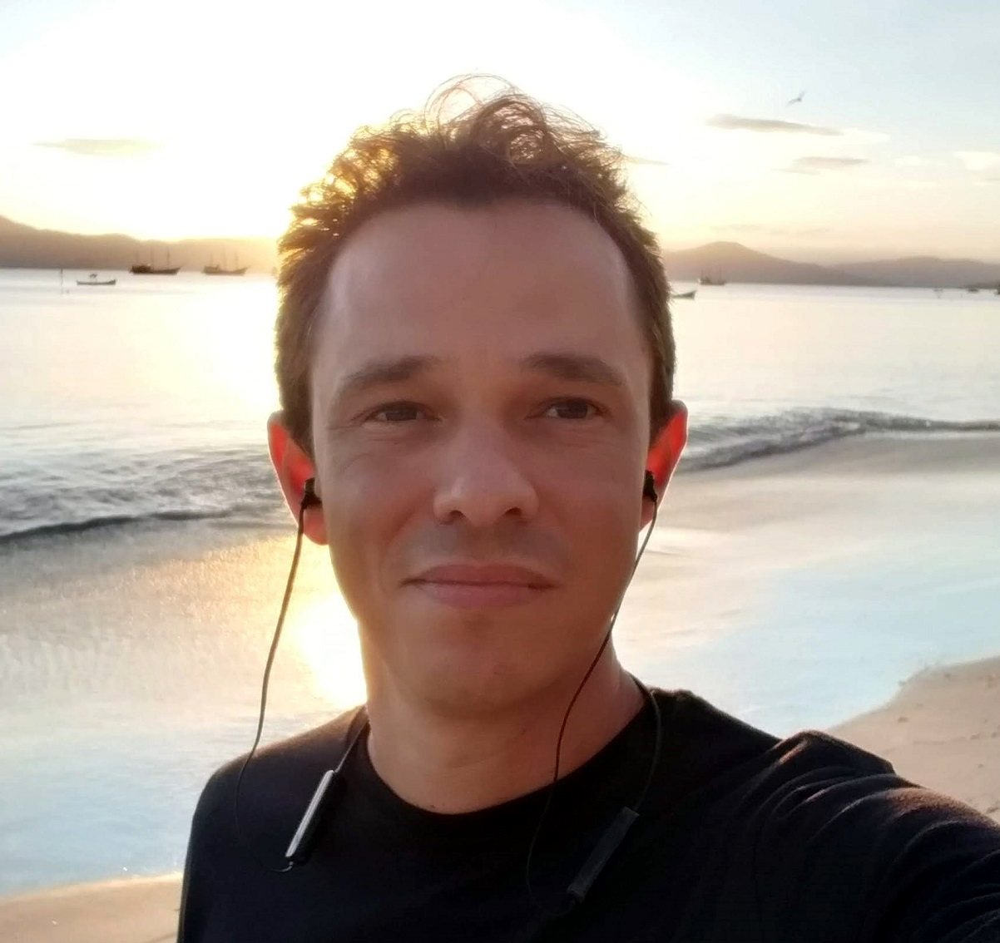
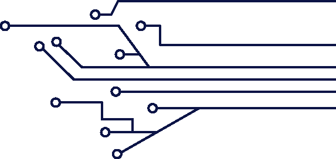
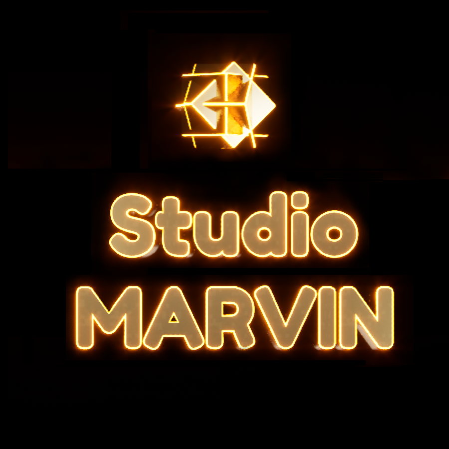
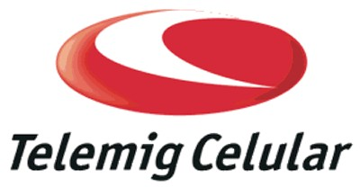
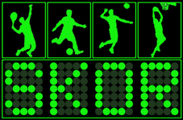
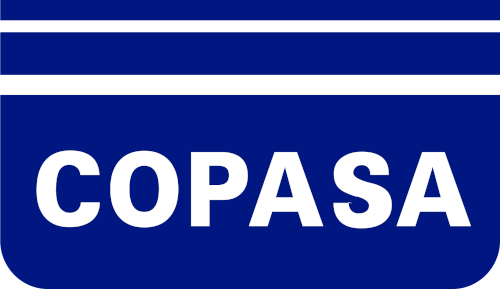
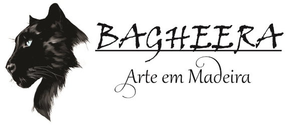
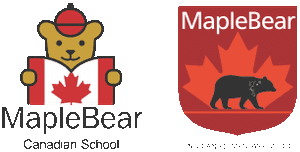

Gerente de Projetos, por mais de uma década, em grandes empresas de telecomunicações (Brasil Telecom e Telemig Celular), na área de Plataformas Especiais e integrações com provedores de conteúdo. Desenvolvedor de produto na SKOR Placares Eletrônicos, incluindo programação de microcontroladores.

Profissional com 27 anos de experiência no mercado, sendo 15 deles atuando como Gerente de Projetos e Consultor de TI em grandes empresas de Telecomunicações, especialmente celular e Plataformas Especiais. Participei da implementação de grandes redes celulares como líder de projeto, organizando todas as metas, seus executores, prazos, matrizes de risco e garantindo o sucesso do serviço ao final do projeto. Nos últimos 5 anos, me especializei no desenvolvimento de simuladores de sistemas complexos em ambientes 3D interativos, incluindo Realidade Virtual (VR), Realidade Mista (XR) e desenvolvimento de Serious Games com a Unreal Engine, para treinamentos e demonstrações de equipamentos industriais e Archiviz. Maker por natureza, determinado e apaixonado por conhecimento e novos desafios!
Experiência avançada no desenvolvimento de aplicações imersivas em Unreal Engine 5, com foco na arquitetura e otimização de soluções de Realidade Virtual (VR) e Realidade Mista (MR) para os setores industrial e de treinamentos. Domínio na criação de simulações complexas e de alto desempenho, integrando ferramentas de ponta para a entrega de projetos inovadores — com validação e exibição em eventos do setor a nível nacional e internacional. Essa vivência consolida a capacidade de traduzir requisitos técnicos desafiadores em soluções interativas realistas e funcionais, agregando valor e eficiência a demandas corporativas críticas.
Muitos anos na área de Tecnologia, como Analista de TI Pleno, atuei em áreas de telefonia celular, com protocolos específicos desse setor (SMPP, ISUP, IS41, GSM-MAP, etc). Realizei trabalhos de integração entre centrais e plataforma, incluindo decodificação e inspeção de pacotes de dados.
Ampla experiência em ANSI C para programação de microcontroladores PIC utilizados nos placares eletrônicos da SKOR. Alguns exemplos desses códigos podem ser encontrados no meu repositório GIT, incluindo funções para decodificação de sinais RF HT6P20, comunicação I2C com periféricos, preenchimento de matriz de LEDs em série com o CI 74HC545, etc.
Escrevi minha primeira página HTML no ano de 1998, por hobby, para hospedar as informações da minha banda do colégio. Naquela época, os resursos para estudo da linguagem eram escassos, e usei o bloco de notas pra escrever juntamente com o Netscape para testar. Muita coisa mudou desde então. Tenho estudado e praticado o HTML5, CSS3 e JavaScript. A página desse currículo online foi escrita por mim, como exercício. Fiz cursos básicos sobre UX/UI e tenho feito bootcamps e vários cursos pra me aprofundar no assunto.
Apesar do Front-End ser essencial para a interação com o usuário, tenho muito gosto por toda a lógica envolvida no Back-End. Gosto muito dos desafios inerentes a essa área, onde "a mágica acontece". Concluí um bootcamp sobre Kotlin e tenho estudado Java, Ruby, Python pra evoluir nessa área. Devido à grande quantidade de linguagens, busco uma oportunidade de focar alguma delas profissionalmente pois sei que dessa forma aprenderei mais rapidamente.

Fundador e Desenvolvedor Principal de estúdio especializado na criação de aplicações imersivas de alta complexidade em Realidade Virtual (VR) e Realidade Mista (MR) utilizando Unreal Engine. Como líder do negócio e da execução técnica, coordeno o ciclo completo de desenvolvimento, abrangendo desde simuladores industriais corporativos até o design de ferramentas inovadoras para treinamento esportivo. A rotina exige otimização avançada de performance para hardwares extremos, integração de plugins de ponta (como o ecossistema Meta XR) e gestão estratégica das atualizações de engine. Essa união entre visão executiva e rigor técnico resulta em soluções com validação de mercado e projeção internacional — destacando-se a entrega e apresentação de projetos para clientes no mercado norte-americano e a estruturação de soluções para grandes eventos da indústria nacional, como a Exposibram.
Atuação como Gerente de Projetos e Engenheiro de Telecomunicações focado em Plataformas Especiais. Liderança técnica na implementação e integração de redes complexas, garantindo a interoperabilidade entre diferentes sistemas. Responsável pela gestão de metas, mitigação de riscos e acompanhamento das integrações com provedores de conteúdo, aplicando forte embasamento analítico sobre tráfego de dados e arquitetura de rede.

Atuação direta na engenharia e suporte avançado de redes celulares, com foco na integração entre centrais telefônicas e plataformas de serviços. O trabalho envolvia análise de protocolos em baixo nível, decodificação de pacotes e troubleshooting para otimização do tráfego em protocolos específicos do setor (SMPP, ISUP, IS41, GSM-MAP). Essa rotina exigia forte capacidade de engenharia reversa para garantir a estabilidade das comunicações.

Desenvolvimento de produto e engenharia de hardware voltada para sistemas de comunicação. Atuação no desenvolvimento de interfaces de comunicação em baixo nível, programação de microcontroladores (ANSI C) e decodificação de sinais de radiofrequência (RF). Aplicação de conceitos avançados de engenharia de telecomunicações para garantir precisão e robustez na troca de dados entre os circuitos e periféricos dos equipamentos.

Engenharia de telecomunicações aplicada à telemetria e infraestrutura de redes corporativas. Projeto, manutenção e suporte dos sistemas de comunicação de dados utilizados para monitoramento e automação. O foco da atuação foi garantir alta disponibilidade, segurança e confiabilidade na transmissão de dados críticos entre as estações remotas e a rede central da companhia.

Empreendimento próprio focado no design e produção de móveis planejados de alto padrão. Esta experiência marcou a transição prática para o ecossistema de visualização 3D. A necessidade de criar apresentações realistas para clientes impulsionou o domínio de ferramentas de modelagem e renderização (Promob, Sketchup, Blender e Unreal Engine). Essa vivência empreendedora uniu a visão espacial e estrutural da engenharia ao design virtual, servindo como o marco decisivo que direcionou a carreira para o desenvolvimento avançado em tempo real e Realidade Virtual.

Atuação estratégica no setor administrativo e contábil de uma instituição de ensino bilíngue de padrão internacional. Gestão integral das rotinas de contabilidade, controle financeiro e estruturação de processos internos. Embora fora do escopo técnico da engenharia, esta posição exigiu alta capacidade analítica e de organização, servindo como uma transição bem-sucedida para a consolidação profissional e residencial no estado de Santa Catarina.
Instituição amplamente reconhecida como um centro de excelência em ensino técnico no Brasil. O programa destaca-se pelo rigor acadêmico e forte embasamento prático, possuindo um histórico consistente de premiações em competições tecnológicas e científicas, o que atesta a alta qualidade da formação, a capacidade de inovação e a sólida base técnica de seus egressos.
O curso proporciona um repertório avançado em arquitetura de sistemas, processamento de dados e design de hardware, alinhando teoria profunda à execução de projetos complexos. Essa base forjou um perfil de forte raciocínio lógico e visão sistêmica, competências essenciais para a resolução de desafios técnicos estruturais e para uma rápida adaptação às constantes evoluções tecnológicas exigidas pelo mercado.